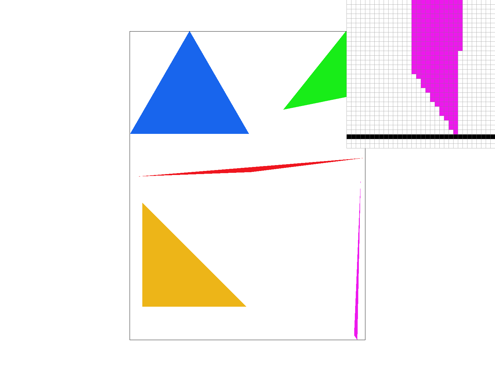
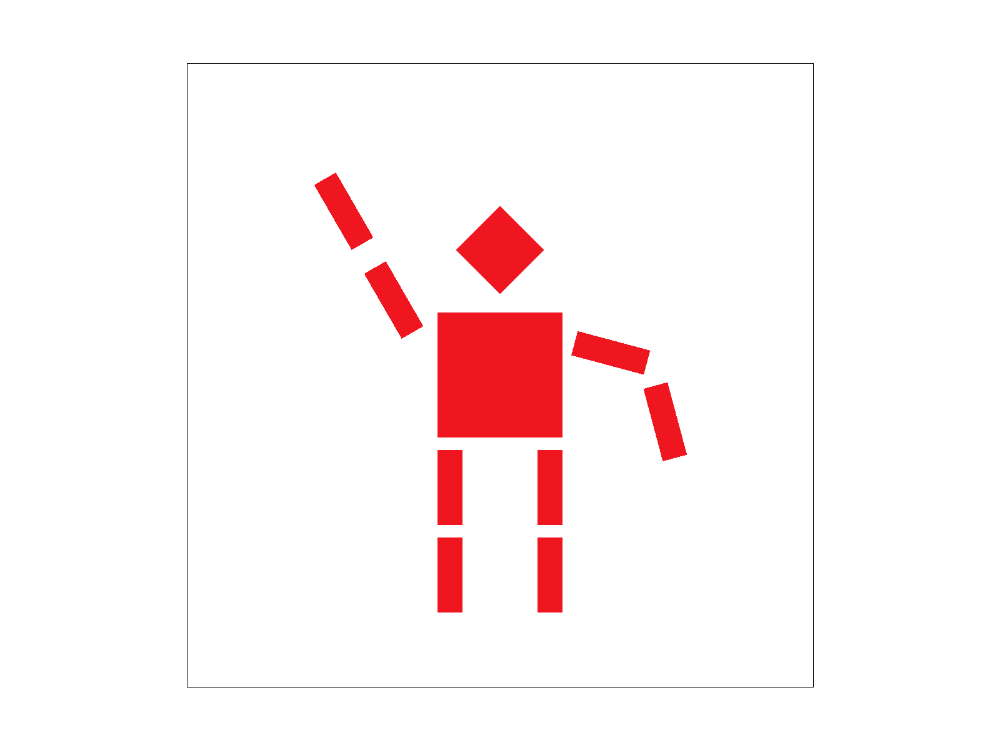
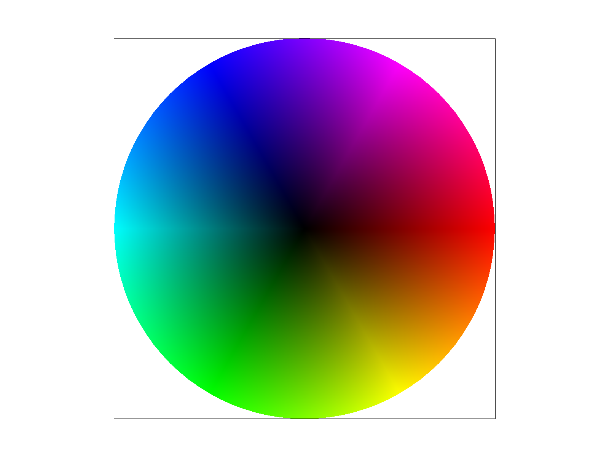
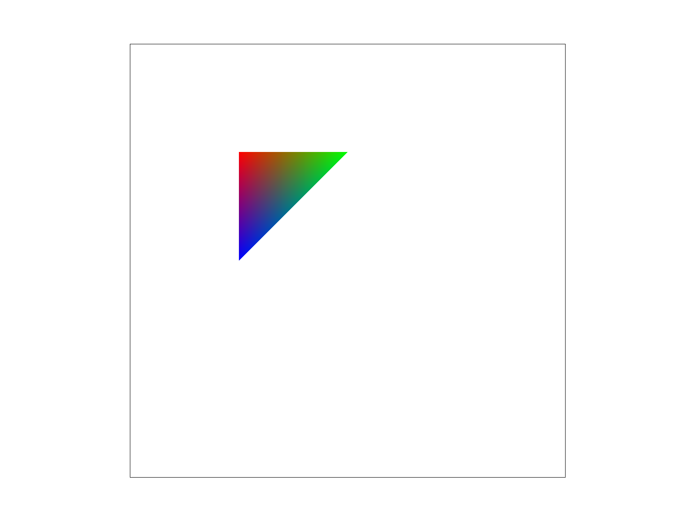
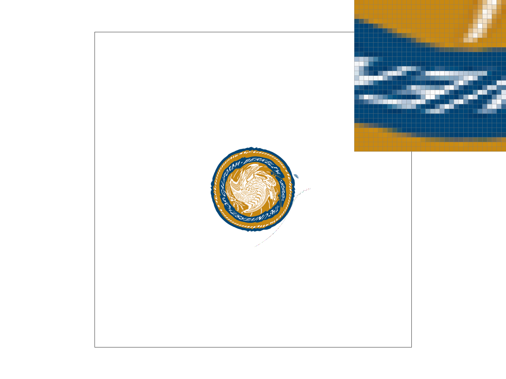
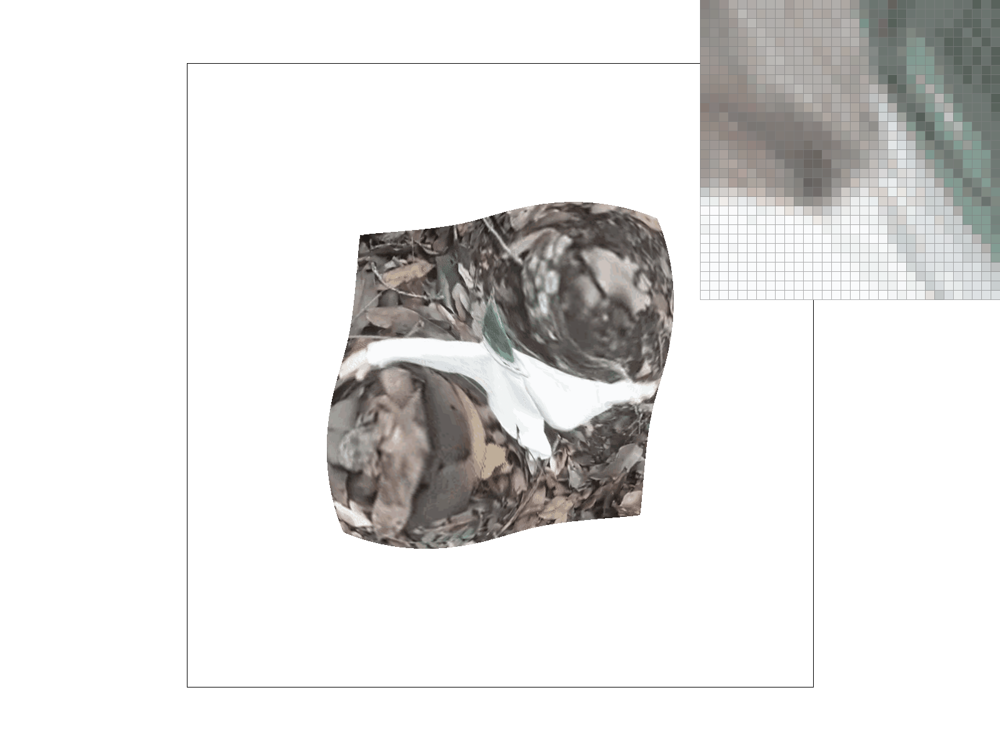
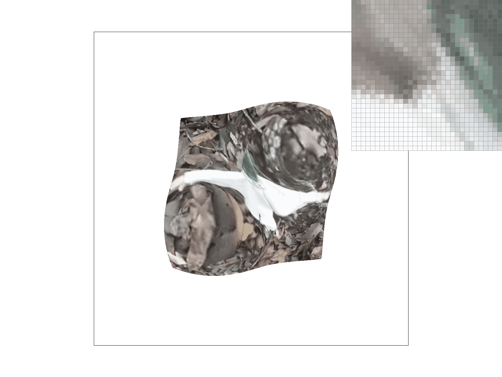

Overview
In this homework, I got to use methods to rasterize vector information into a pixel format. Whether it was figuring out if a pixel was inside a triangle or how to interpolate values from vertices across a triangle, I learned about how configuring indivudal triangles can build up an image. I also implemented and got practice with using various techniques for sampling for anti-aliasing including supersampling, level sampling, and pixel sampling. I got to use pixel sampling and level sampling for mapping textures onto surfaces. One last note was that linear interpolation was a technique used multiple times during this assignment too, which I believe is a helpful tool for smoothing out edges when anti-aliasing.
Section I: Rasterization
Part 1: Rasterizing single-color triangles
To rasterize a triangle given the x,y coordinates of its vertices and its color, I did the following. Since I had to update the pixel value in the buffer of only pixels inside the triangle, I found the bounds of the triangle on both the x and y axes by computing the minimum and maximum x and y values of the vertices. This way I wouldn't have to check the whole grid unnecessarily. For all pixels that fell in this rectangle, I tested whether they were all on the same side of the triangle's edges' half planes. I would update their color in the sample buffer to the inputted color if their L(x,y) values for all three edges were all >= 0 or all <= 0.
Part 2: Antialiasing triangles
For my supersampling algorithm, I updated my original triangle rasterization algorithm. For each x,y coordinate or pixel on the screen, I would dice it up even further into n x n samples spread evenly across each pixel. Instead of just looking at the middle pixel or (x+0.5, y+0.5), I looked at (x+ 1/(2*n) + i/n, y+ 1/(2*n) + j/n) for i and j each ranging from 0 to n-1. I increased the size of the sample buffer data structure everywhere by n*n or the sample_rate so I can rasterize the original image at a higher resolution. Now, for each pixel, there are nxn points which offers more detail. For the existing point & line rasterization methods, I spread the same input color across all supersamples since averaging the super samples per frame buffer would let the pixel have the same color. Now, when resolving to the frame buffer, I average all the super sample values per pixel for the final frame buffer. Now, there is more of a gradient that can represent how much of a pixel the triangle takes up. This anti-aliased the resulting image so that it had fewer jaggies and appeared more smooth, although a little blurry.
|

|
|
|
|
The higher sample rates were blurrier and spread across more pixels because there are finer pixels in triangles that may have been missed at a large resolution. However, they are now included since the image was downsampled from a much higher resolution.
Part 3: Transforms
I rotated and translated the arms of cubeman to help him wave
Section II: Sampling
Part 4: Barycentric coordinates
Barycentric coordinates are a way of locating individual points in a triangle. It has three parameters: alpha, beta, and gamma, all of which sum to 1. Different combinations of these three coordinates yield different points within the triangle. They can be used to interpolate values at the three vertices across the triangular plane. For example, in the image below and on the right, the vertices are red, blue, and green respectively. Using the formula for barycentric coordinates, the colors are evenly distributed across the triangle in a smooth manner with points closer to a vertex of a certain color having a higher intensity of that color.
|

|

|
Part 5: "Pixel sampling" for texture mapping
Pixel Sampling is a method to derive values at undefined intermediary coordinates from neighboring coordinates where values are explicity defined. With texture sampling, texture values are defined at a particular resolution, but pixels that need to be assigned that a texture may be spread across a finer resolution. As a result, pixel sampling needs to be used to assign texture values to these pixels. Two methods are nearest and bilinear sampling. To do bilinear pixel sampling, you need to take the 4 defined texture values surrounding the input pixel. The texture is split into a grid format with values at every intersection. Pixels may fall in grid tiles, so you would take the 4 pixels on the corners and do linear interpolation. Given two values on a line, linear interpolation would assign a value to an intermediate point by weighing its proximity to both values. We would do 2 linear interpolations on both corners of the grid tile based off of the input pixel's x coordinate before doing one final linear interpolation off of their outputs on the pixel's y coordinate. This result would generate a texture value for that pixel. To do nearest pixel sampling, you just need to assign an input pixel to the nearest defined texture value or the nearest intersection in the grid.

|
|
|

|
|
At 1x1 supersampling, switching from nearest to bilinear pixel sampling had a drastic impact on anti-aliasing the image and increasing its quality, making it smoother. At 16x16 though, the distinction was a lot slighter, but there was definitely a smoother gradient texture with bilinear sampling.
Part 6: "Level sampling" with mipmaps for texture mapping
Level Sampling is a method to find the optimal mipmap level to texture an image by. The algorithm involves calculating how much the texture coordinates vary by changes in the pixel coordinates in x and y axes, and then taking the log of the maximum derivative, namely "D". This is an approximation that may land between 2 levels of resolution, so like pixel sampling, you can use linear or nearest level sampling. Linear level sampling uses linear interpolation based off of D's decimal value and on the texture values on both levels. Nearest sampling simply returns the texture value of the nearest level by rounding D. Lastly, there is zero level sampling, which just returns the texture at level 0 or full resolution.
Pixel sampling, Level Sampling, and Supersampling are all powerful techniques to sample large images. Supersampling can become pretty slow when there are a significant number of samples per pixel to iterate through and average. To store these extra samples, it also requires extra memory space per pixel, which can build up over large images. However, these many samples has the strongest effect on increasing anti-aliasing power providing smooth images and fine details represented in neighboring pixels. Pixel sampling offers pretty fast speed, since it only samples each pixel once and only requires as much storage as the number of pixels, but due to the limited sampling size, there is lower quality. Level sampling offers slightly slower speed since you are calculating a pixel value across multiple levels. It requires roughly 4/3 * W*H space for a mipmap, which is better than supersampling, but worse than pixel sampling. It also provides a decent anti-aliasing power since it averages texture values across multiple samples.
|
|

|
|

|
|
These images are run on ownpng2.svg and the pixel inspector was focused on the left shoulder (from our perspective) of the whimsical elvish creature
Section III: Art Competition
If you are not participating in the optional art competition, don't worry about this section!